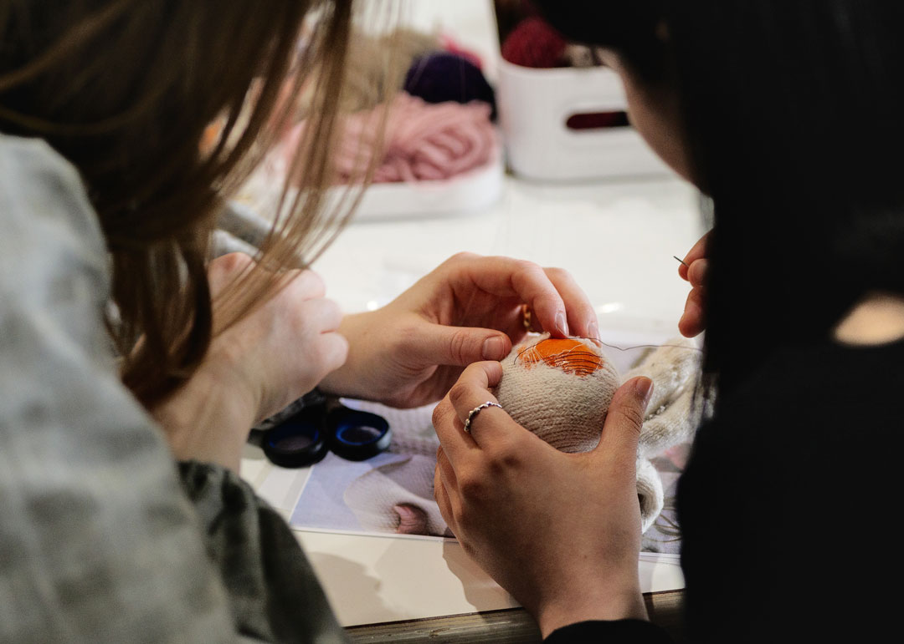
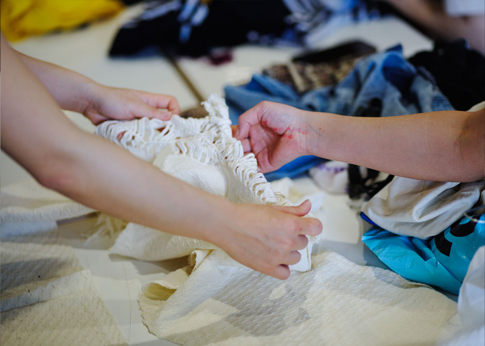
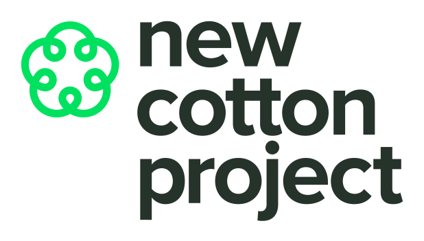
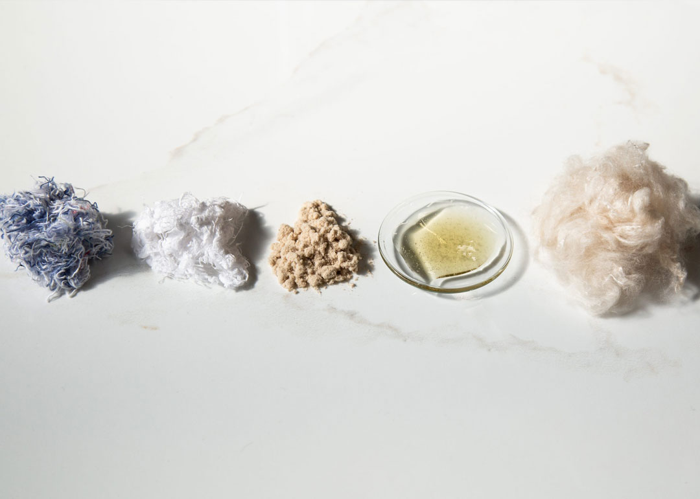

A platform which brings together EU-wide research projects which Aalto University’s Fashion/Textile Futures research group has been part of, sharing learnings to broaden knowledge on circularity in the textile industry.
circular textiles

Textile Recycling Excellence (T-REX) is a research project funded
by the European Union’s Horizon Europe research and innovation
programme from 2022-2025. Twelve partners across the clothing and
textile value chain work towards creating a circular system for
post-consumer textile waste, with a focus on closed loop, chemical
recycling.
visit site


The New Cotton project is a research project funded by the
European Union’s Horizon Europe research and innovation programme
from 2020-2024. Twelve partners collaborate to demonstrate a
circular model for commercial garment production, regenerating
textile waste into a new, man-made cellulosic fiber that looks and
feels like virgin cotton.
visit site
